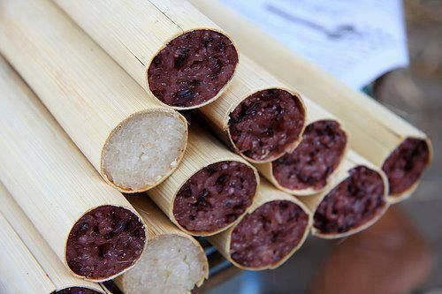

E & M
Review: For those who want to eat good Shan noodles and good Shan food, there is a shop called "Shan Lay" near tamwe, which has local food from Shan State. This shop has been open for a long time. About 2 years ago, I started eating tofu and Shan noodles. The taste was really good and the price was around 1,200. The owner himself is from Shan, and he is very kind. The flavors are quite addictive and will make you feel as if you are in Shan State.
Address: No.43, West Myin Pyai Kwin street, Top of BoHtun Lin road, Bo Sein Mhan ward, Bahan.
Phone Number: 09-942299579
To get more info: သျှမ်းလေး
Review: There have many menus, Shan noodles, Shan hmee shay, Kawyay noodles, fried Tofu, and fried rice *cold or hot you may choose what you like* and even mala mao cai, etc... For kawyay noodles, The sticky sauce at this shop is so good. The noodles are flat and soft and sweet. And it costs 1500kyat. For shan hmee shay, it was added a little sticky sauce with a good flavor and it's very good to eat, and I feel like I wanna eat again and again.. For fried Tofu, there are 10 tofus in one plate, the sauce to eat together with is spicy and a perfect match, If you like to eat spicy foods, I bet you'll like that sauce with tofus. There are so many kinds of shan food which taste so good.
Address: Bo Sein Mhan street, Bahan.
Phone Number: None
To get more info: None
Review: This shop is really neat and tidy. And the taste of the foods are like really mandalay taste. There have Nan Gyi Thoke, Myay Oh Me Shay and etc. The fried fish and the soup taste like Mandalay taste and very good. Also the price is not very much to eat.
Address: Kyi Myint Dai night market.
Phone Number: 09420224903
To get more info: None
Review: In this restaurant, you can eat mohinga, coconut noodle, nan gyi thoke, etc.. But the main menu in this resturant is mohinga. But unique from others, the mohinga from this restaurant is hala. The price is very fair to eat this kind of tasty mohinga, So let me recommend this to you..
Address: No.170, 31street(Upper Block),Papedan township.
Phone Number: 09-254013452
To get more info: ပန်းရိုးမ -မုန့်ဟင်းခါး
Review: Since the owner is from thi pao, the taste of the foods are like shan vibes. The ower is very kind and you can hear shan music that they opened in the restaurant. There are many tasty shan foods. They have deli to home so, if you wanna try eat shan foods you can order..
Address: Hledan 7 Street Yangon
Phone Number: 09-426710301
To get more info: ဝမ်းဝမ်း သီပေါ
Review: I've only ever seen this kind of flavor in this shop in Yangon.sold in bundles, as the steaks are made of small pieces of meat. The price is around 3000/4000 per bunch. There have chicken/pork/plywood/beef/shrimp and grilled fish. The sauce marinated in the steaks are so cool. And the Grilled Fish is also awesome. t is not full of fat and yolks like normal fish cakes, but the meat is tender and has a completely authentic taste. This kind of taste only exists in the mountains. I can tell that this is the good one in street foods.
Address: Insein road, near San Yeik Nyein bus-stop.
Phone Number: 09-770002745
To get more info: Kyaing Tong-Hledan